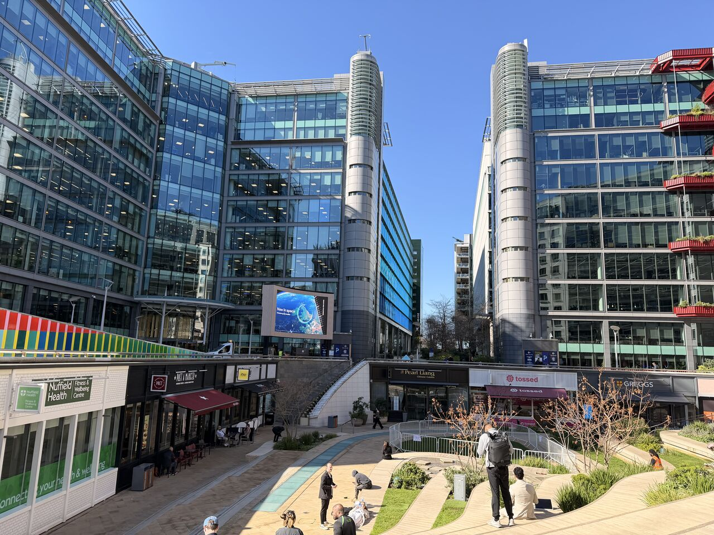
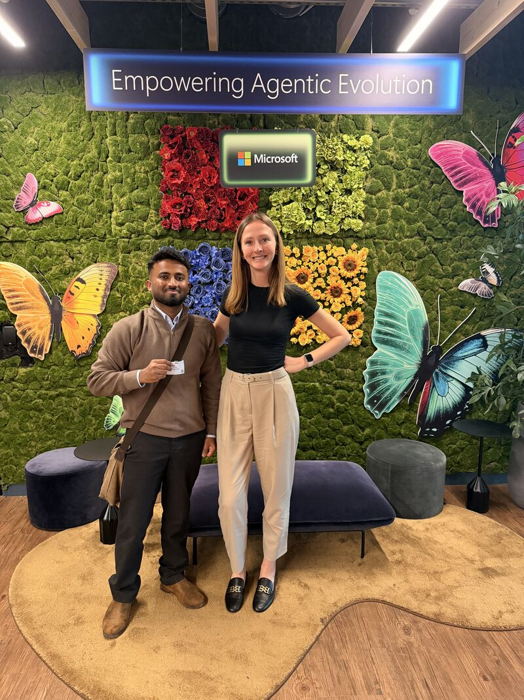
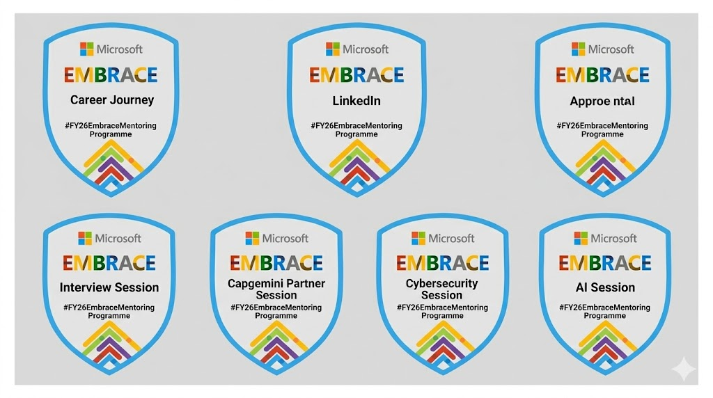

Recently I spent time on-site with Microsoft. As part of the FY26 Microsoft Embrace Mentoring Programme, I went from online workshops to actually being on-site. Seeing the scale of the place up close was a good reminder of why I want to work at the intersection of data analytics and cybersecurity.
Stepping Into Innovation: The In-Person Advantage

The campus has a real energy to it, and it's clearly built around teams working closely together. The highlight for me was finally meeting my Microsoft mentor, Nathalie Maslen, in person — until then, everything between us had been over a screen.
Meeting in person changed the tone of her mentoring. We didn't just talk about technical skills — a lot of it was about building confidence and thinking about longer-term direction. Her advice on navigating the corporate tech world was genuinely useful, and it reinforced how much good mentorship can do for someone starting out.
"Being there in person, not just online, made the whole thing click."
A Strategic Foundation

The earlier part of the programme ran online and focused on practical, job-ready skills before the on-site visit.
- LinkedIn and online presence: Making my profile easy to find and clear about the data and security work I do.
- Interview practice: Practising how to explain technical and analytical work clearly under interview conditions.
That groundwork made the technical sessions later on a lot more useful.
The Technical Deep Dive
.jpg)
The final phase was the most technical. I completed sessions on two areas I care a lot about:
- Applied Artificial Intelligence: How Microsoft and its partners are actually using AI to solve real business problems at scale.
- Advanced Cybersecurity: The core concepts and modern patterns behind securing large, fast-changing systems.
Overall I came away with a much more practical sense of how the industry works, and the foundations to build real things in AI and secure systems.
A Heartfelt Thank You
Thanks to the sponsors at Microsoft, Amber Joyce and Jeramie Sutton, and the whole programme team. A special thank you to EDI and Dr. Frances Trought (DUniv) for backing the programme and opening doors for people like me. I'm grateful for the experience and everything I picked up.